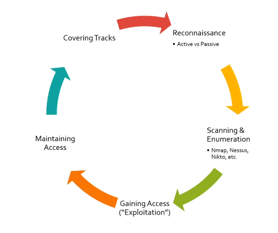

5 Stages of Ethical Hacking
We will review the different stages of ethical hacking and what they mean.

Reconnaissance- Information gathering
- Active reconnaissance is when we get data directily from the target
- Passive is like looking up your target via Google, getting data from public profiles
Scanning & Enumeration- Looking at items to find anything of value
- You may find something that you can then research on to find exploits for
Gaining Access- Run an exploitation against our target (client, host, server ect)
- We are trying to gain access to a network, machine, environment etc
- Once we have gained access, we will want to do some further reconnaissance, enumeration & exploits
Maintaining Access- How to maintain access to the network even if the target turns off their machine
Covering tracks- Get rid of any logs
- Might want to remove any malware, or any accounts you may have created
- Cleaning up ater your pen-test or covering up your tracks so your exploit stays hide
This course will heavily focus on stages 1 - 3 and briefly cover the final two stages.
Whether you're pen-testing a network, web app, etc the 5 stage methodology applies to all.